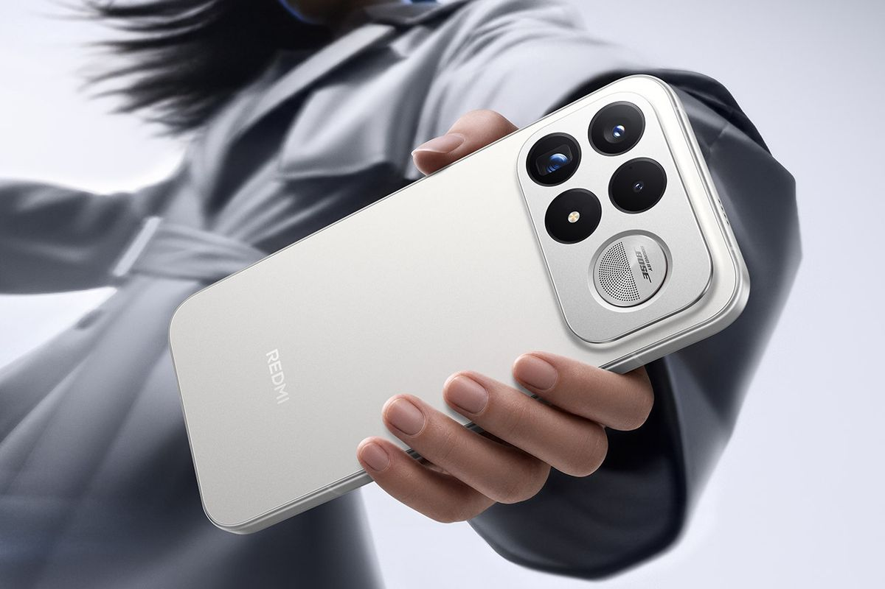
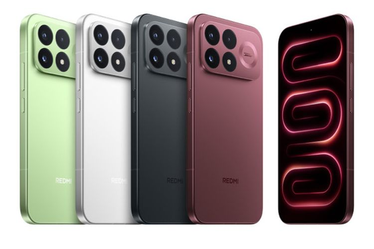

Redmi K100 Pro Max(Xiaomi)
KOMPAS.com - Xiaomi resmi meluncurkan Redmi K100 Pro series di China sesuai jadwal, pada Selasa (11/8/2026). Smartphone ini hadir dalam dua model, terdiri dari Redmi K100 Pro dan Redmi K100 Pro Max. Seperti Redmi K series sebelumnya, kedua ponsel ini dilengkapi dengan spesifikasi yang mumpuni, termasuk chipset flagship, kecepatan refresh rate layar tinggi, baterai besar hingga resolusi kamera utama 200 MP.
Sekilas, duo Redmi K100 Pro terlihat sama karena memiliki desain yang serupa. Punggungnya dibekali modul kamera persegi panjang yang menampung tiga kamera belakang ponsel serta satu lampu flash LED
Modul itu juga dihias dengan logo Bose, menunjukkan bahwa audio ponsel ini didukung oleh perusahaan alat audio asal Amerika Serikat, Bose, Meski tampak sama, baik Redmi K100 Pro dan Redmi K100 Pro Max menawarkan spesifikasi yang agak berbeda. Berikut rinciannya.
Spesifikasi Redmi K100 Pro
Redmi K100 Pro ditenagai chipset terbaru Qualcomm yang baru diperkenalkan Agustus 2026 ini, yaitu Snapdragon 8 Elite Gen 5V Series. Chip ini dipadukan dengan RAM LPDDR5X dan penyimpanan UFS 4.1. Smartphone ini juga dilengkapi chip grafis D2 serta chip penguat sinyal T1+ buatan Xiaomi.
Untuk menjaga suhu perangkat, Redmi K100 Pro menggunakan sistem pendingin berupa ice-cooled circulating pump seluas 5.150 mm persegi. Smartphone ini dibekali layar OLED berukuran 6,59 inci dengan resolusi 2.510 × 1.156 piksel. Layarnya mendukung refresh rate hingga 185 Hz, menggunakan material M11, serta memiliki tingkat kecerahan hingga 2.200 nits.
Co-Founder MAC, Natalia Sagita mengatakan, MAC optimistis dapat menjadi trend center aesthetic medicine di Bandung, menghadirkan teknologi berstandar dunia yang tetap mengedepankan inovasi, keselamatan pasien, dan hasil yang natural.

Pada aspek kamera, Redmi K100 Pro mengandalkan tiga kamera belakang. Konfigurasinya terdiri dari kamera utama 200 MP dengan optical image stabilization (OIS), kamera telefoto 50 MP, dan kamera ultrawide 8 MP. Sementara untuk kebutuhan selfie dan video call, tersedia kamera depan 32 MP.
Smartphone ini juga dilengkapi baterai besar berkapasitas 8.580 mAh dengan kandungan silikon 26 persen dan kepadatan energi 945 Wh/L.
Fitur lainnya mencakup sensor sidik jari ultrasonik, sertifikasi IP66, IP68, dan IP69, serta sistem operasi HyperOS 3.0.
Redmi K100 Pro memiliki ketebalan 8,55 mm dengan bobot 218 gram. Smartphone ini tersedia dalam pilihan warna hitam, putih, shimmering light, dan Cabernet Sauvignon red.